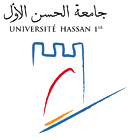

Les derniéres actualités
Annonces
Nouveaux troncs communs sciences et techniques

Il est porté à la connaissance des lauréats des filières ingénieurs et master l’ouverture du concours de recrutement des élèves pilotes de ligne du groupe RAM. Pour plus d’information consulter la fiche ci-dessous:
Important! Choix d’orientation des étudiants inscrits en DEUST aux LST

La Faculté de Sciences et Techniques lance la procédure d’orientation des étudiants futurs lauréats du DEUST vers les LST accréditées et ouvertes au sein de l’établissement. Ainsi, les étudiants concernés sont invités à faire leur choix de filière en accédant
Planning des contrôles de rattrapages

Les résultats de la première session seront affichés sur votre compte Scolagile. Ainsi, il faut consulter régulièrement votre compte. Le jour du contrôle de rattrapage, veuillez vous présenter 30 min avant le début de l’épreuve. Pour connaître votre lieu d’affectation au
Concours élèves pilotes de ligne du groupe RAM
Il est porté à la connaissance des lauréats des filières ingénieurs et master l’ouverture du concours de recrutement des élèves pilotes de ligne du groupe RAM. Pour plus d’information consulter la fiche ci-dessous:
Appel à projets de recherche thématiques

Appel à projets de recherche thématiques au profit des structures de recherche de l’UH1 Date de soumission: du 15 juin au 15 juillet 2024 📅 Formulaire Appel à projets de recherche thématiques au profit des Structures de recherche – UH1
Mot du Doyen
La participation de tous les acteurs de la société à la dynamique de développement que connait aujourd’hui notre pays est à tous égards, incontestable. Néanmoins, face aux différents changements,que connaît le monde actuellement, sur tous les plans socio-économique, scientifique, technique...
Témoignage
"Dans l'ère de la technologie numérique et de la digitalisation de la formation. La FSTS lance son nouveau site web. Ce portail est conçu pour vous rapprocher de votre institution, ses composantes, l'organisation des études, les formations dispensées, et les diplômes délivrés. Le site présente de nombreuses nouveautés et offre aux visiteurs notamment les étudiants une expérience améliorée grâce à une navigation simplifiée et une utilisation intuitive."
FSTs en chiffres
Etudier à la FSTS. C'est allier savoir, idées et valeurs.
Formation initiale
Les Facultés des Sciences et Techniques adoptent une architecture pédagogique qui s’inscrit dans le système LMD…
Formation continue
La formation continue est organisée pour être d’une part, au service de toute personne désirant acquérir ou développer…
Recherche Scientifique
Le cycle de doctorat est organisé au sein du Centre d’Etudes Doctorales qui abrite 6 établissements…